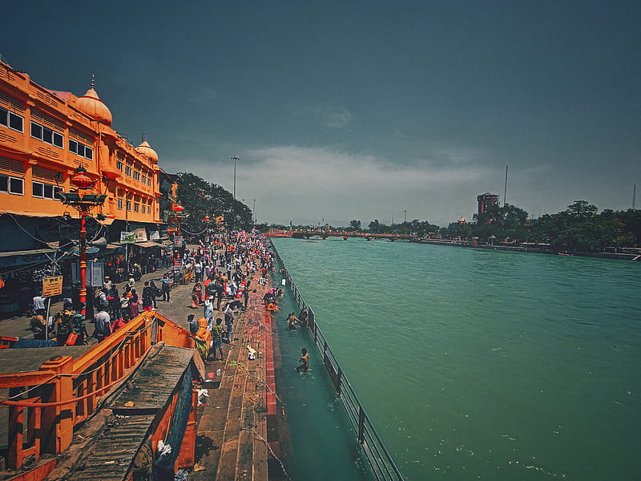

Featured Photos


Haridwar, situated on the banks of the sacred Ganges River in the Indian state of Uttarakhand, is one of the holiest cities in Hinduism. Known for its spiritual significance and rich cultural heritage, Haridwar attracts millions of pilgrims and tourists every year. The city hosts the Kumbh Mela, a massive religious gathering, every twelve years, making it one of the most important pilgrimage destinations in India. Apart from its religious fervor, Haridwar also offers picturesque ghats, ancient temples, and vibrant festivals, providing visitors with a truly immersive cultural experience.